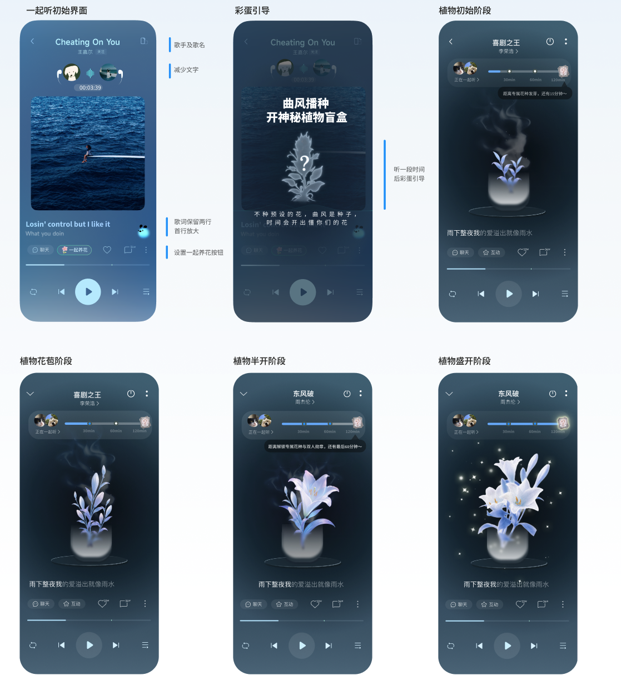
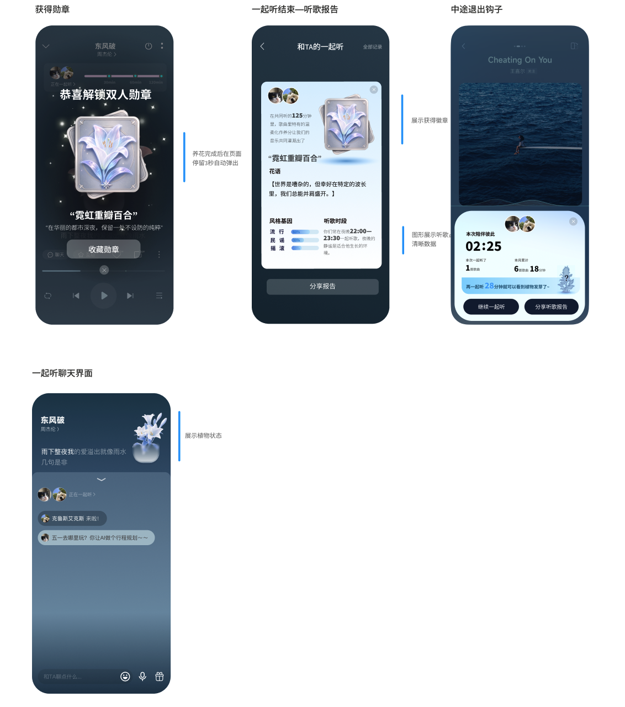

成长性
1. 从交互逻辑层面思考设计流程
在梦境的引导下逐步梳理设计逻辑，并通过视觉方式呈现，了解如何通过设计呈现更多的吸引和引导用户。
郭晓彤实习周报
2026.06.08 - 2026.06.18
在梦境的引导下逐步梳理设计逻辑，并通过视觉方式呈现，了解如何通过设计呈现更多的吸引和引导用户。
在做的过程中有时会忘记受众以及目标导向，需要更加明确设计目标以优化设计呈现。
尝试让 AI 介入更多的设计流程，从其他同学分享的 Codex 使用经验出发，尝试做更多的工具提交探索。
接触界面相关的设计较少，应建立自己的素材库来补充此方面的知识。
Part1：一起听玩法探索
探索一起听双人空间的更多新玩法、新的页面
1. 结合“听歌时长 + 曲风气质 + 花语设定”，按照种子、成长、盛开、助眠的生命周期来设计。
2. 不需要用户自己选择种子，根据系统分析用户前 30 分钟内听歌曲风确定种子，对用户来说是盲盒模式的体验。
目标感更强，未知的盲盒体验更吸引人1. 将双人在一起听的时长转化为可视化“行驶里程”，构建一条持续生长的虚拟公路旅程。
2. 以音乐类型作为环境切换与地理里程碑触发器，随着里程累积解锁真实世界公路与景点，并弹窗锚定作为记忆锚点。
逻辑较难梳理清晰，视觉呈现困难设计产出 1

设计产出 2

目标受众为 16-22 岁人群，且异性偏多，在听歌和社交中更习惯低门槛、低操作成本的体验。如果引入复杂的选择和规则，会增加理解负担，也会打断听歌本身的情绪流动。同时听歌场景本身是碎片化的，不适合重交互和强结构系统。通过“系统自动根据前 30 分钟曲风生成种子 + 听歌时间自然推动生长”的方式，把更多逻辑隐藏在后台，用户只需要正常听歌，就能看到情绪化的成长变化，既保留了盲盒带来的惊喜感，也避免关系被过早定义，让整体体验更自然、更轻松，也更符合异性社交中对暧昧感和留白的需求。
尝试使用简洁且轻量化的设计风格，轻视觉也能减少压力感，让用户更自然地投入和停留。同时如果画面过于复杂，会分散注意力，削弱听歌带来的沉浸感。